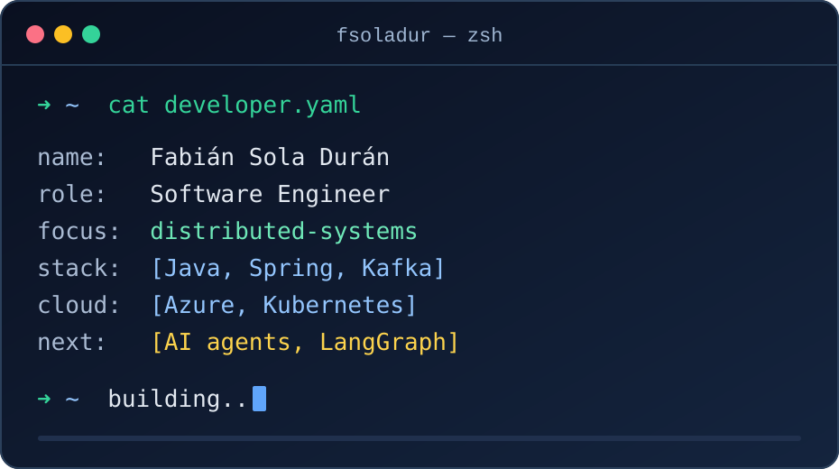

🧠 LLMigrator-DB
LLM-powered database migration and validation tool developed as a Bachelor's Thesis.
Spring BootSpring AIOpenRouter

I'm a Software Engineer based in Spain, focused on building reliable backend services and cloud-native systems.
My professional work centers on Java, Spring Boot, Apache Kafka, event-driven microservices, API-first development, observability and Azure Kubernetes Service (AKS).
I'm pursuing an MSc in Software Engineering at the University of Murcia and exploring AI agents for database migration.
Focus: distributed systems, testing, architecture and maintainability.

LLM-powered database migration and validation tool developed as a Bachelor's Thesis.
Spring BootSpring AIOpenRouterCommunity and causes platform built with modular backend and modern web technologies.
NestJSReactgRPCAI agents · LangGraph · Distributed systems · API security · Observability · Software architecture